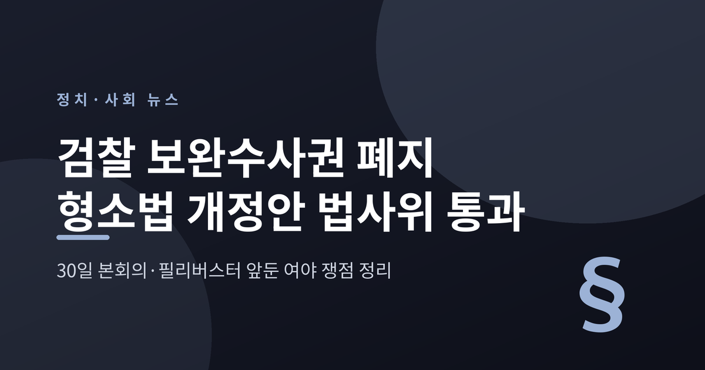
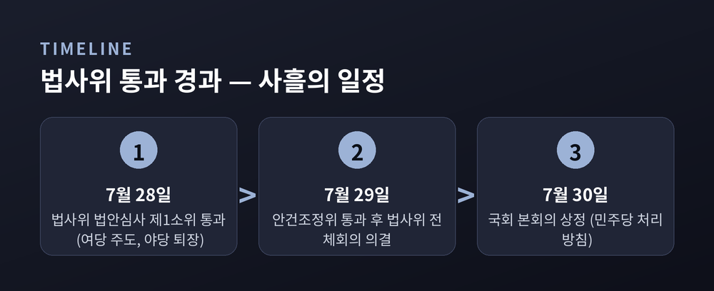
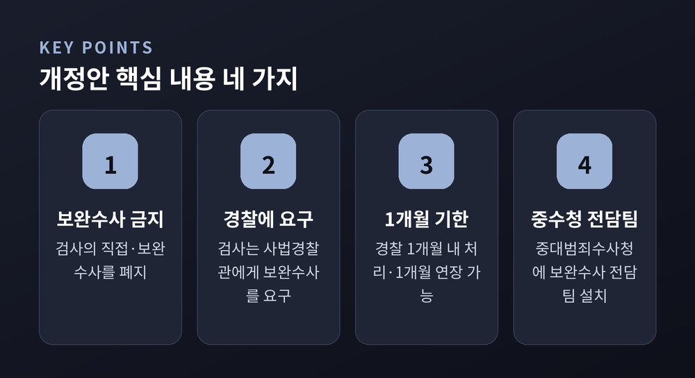
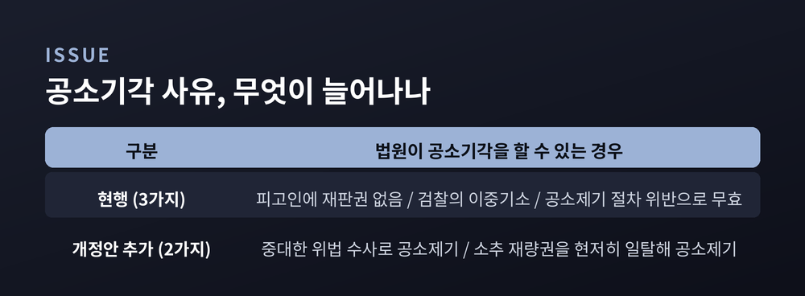
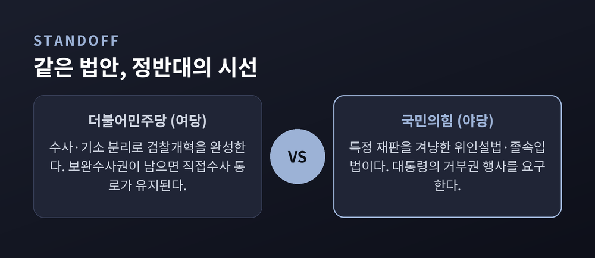
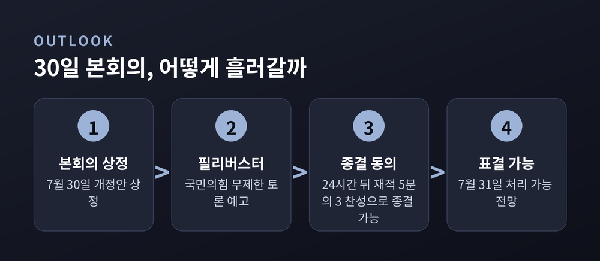

무슨 일이고, 여야는 왜 부딪치나
이번 글에서는 2026년 7월 29일 국회 법제사법위원회를 통과한 형사소송법 개정안을 정리해 보겠습니다. 검사의 보완수사권을 없애는 법안입니다. 무슨 일이 있었고 왜 중요한지, 여야가 무엇을 놓고 부딪치는지 차례로 짚어 보겠습니다. 특정 편을 들지 않고 양측 주장을 함께 담습니다.
핵심 세 줄 요약

시작은 7월 28일이었습니다. 검사의 보완수사권을 전면 폐지하는 형사소송법 개정안이 국회 법사위 법안심사 제1소위원회를 통과했습니다. 더불어민주당이 주도했고, 국민의힘은 표결에 반발해 회의장을 떠났습니다.
하루 뒤인 7월 29일에는 속도가 붙었습니다. 같은 법안이 법사위 안건조정위원회를 통과했고, 곧이어 법사위 전체회의에서 여당 주도로 의결됐습니다. 이 자리에서도 국민의힘은 표결에 참여하지 않고 퇴장했습니다.
민주당은 다음 단계를 분명히 했습니다. 7월 30일 국회 본회의에서 이 개정안을 처리하겠다는 방침입니다. 통과 절차가 사흘 만에 소위에서 본회의 문턱까지 온 셈입니다.

핵심은 검사의 직접수사, 그중에서도 보완수사를 금지하는 데 있습니다. 지금까지는 경찰이 넘긴 사건을 두고 검사가 기소 여부를 판단하기 위해 필요한 부분을 스스로 더 수사할 수 있었습니다. 개정안은 그 통로를 막습니다.
대신 검사는 경찰(사법경찰관)에게 보완수사를 '요구'하는 방식으로 바뀝니다. 요구를 받은 경찰은 1개월 안에 수사를 마쳐야 합니다. 기간 안에 끝내기 어려우면 1개월을 연장할 수 있습니다.
민주당은 보완 장치도 함께 내놨습니다. 중대범죄수사청(중수청)에 보완수사 전담팀을 두겠다는 것입니다. 완전 폐지를 당론으로 채택하면서 "피해자 보호 의견을 다수 반영했다"고도 설명했습니다.
정리하면 수사는 경찰과 중수청이 맡고, 기소와 공소유지는 검사가 맡는 구조입니다. 이른바 '수사·기소 분리'를 한 걸음 더 밀고 나간 그림입니다.
이 변화가 왜 중요한지도 짚어 두겠습니다. 보완수사는 형사사건 처리의 마지막 관문에 해당합니다. 이 권한이 사라지면 사건 처리의 흐름과 책임 소재가 바뀝니다. 찬성 측은 검사의 과도한 권한을 견제하고 피의자 인권을 넓힌다고 봅니다. 반대 측은 부실 수사를 걸러 낼 장치가 줄어 수사 공백이 생길 수 있다고 우려합니다. 같은 조문을 두고 기대와 걱정이 엇갈리는 셈입니다.

이번 개정안이 유독 뜨거운 이유는 따로 있습니다. 초안에는 없던 '공소기각 사유 확대'가 심사 과정에서 추가된 사실이 알려지면서입니다.
공소기각은 법원이 본안 판단에 들어가지 않고 재판을 끝내는 절차입니다. 지금 법은 세 가지 경우에만 이를 허용합니다. 피고인에 대해 재판권이 없을 때, 검찰이 이중으로 기소했을 때, 공소제기 절차가 법을 어겨 무효일 때입니다.
개정안은 여기에 두 가지를 더합니다. '중대한 위법 수사에 의해 공소가 제기됐을 때', 그리고 '소추 재량권을 현저히 일탈해 공소가 제기됐을 때'입니다. 검사가 객관성과 중립성을 지켜야 한다는 '객관의무' 조항도 담겼습니다.
| 구분 | 법원이 공소기각을 할 수 있는 경우 |
|---|---|
| 현행 (3가지) | 피고인에 재판권 없음 · 검찰의 이중기소 · 공소제기 절차 위반으로 무효 |
| 개정안 추가 (2가지) | 중대한 위법 수사로 공소제기 · 소추 재량권을 현저히 일탈해 공소제기 |
법조문 몇 줄의 변화지만 파장은 작지 않습니다. 위법하게 수집한 증거로 기소된 사건이라면, 법원이 유·무죄를 따지기 전에 재판 자체를 접을 길이 열리기 때문입니다. 법안은 김용민 더불어민주당 의원과 박은정 조국혁신당 의원이 대표발의했습니다.

여당과 야당의 시각은 정면으로 갈립니다. 어느 쪽 말이 옳은지는 독자가 판단할 몫이라, 여기서는 양측 논리를 나란히 옮깁니다.
여당인 민주당은 '검찰개혁의 마지막 단추'로 봅니다. 보완수사권이 남아 있는 한 검사의 직접수사 통로가 사실상 유지된다는 논리입니다. 한병도 원내대표는 "여기서 멈추거나 타협하면 검찰청 간판만 공소청으로 바뀔 뿐, 검찰권의 본질은 그대로 남는다"는 취지로 강행 의지를 밝혔습니다. 수사와 기소를 나눠 힘을 분산하자는 것이 개혁의 명분입니다.
야당인 국민의힘은 '위인설법'이라고 부릅니다. 특정인을 위해 급조한 법이라는 뜻입니다. 특히 뒤늦게 끼워 넣은 공소기각 사유 확대를 두고 "이재명 대통령 재판 지우기용 플랜C"라고 규정했습니다. 본회의 직전에 법안 내용이 공개된 점을 들어 '졸속 입법'이라는 절차 비판도 함께 제기합니다.
야당의 대응은 두 갈래입니다. 정점식 원내대표는 이 대통령이 재의요구권(거부권)을 포기하면 "정부·여당이 동반 몰락할 것"이라며 대통령의 침묵을 비판했습니다. 권영세 의원 등은 아예 거부권 행사를 요구하고 있습니다. 다만 대통령의 입장은 29일 시점까지 분명히 드러나지 않았습니다.

정치권 밖의 의견도 있습니다. 대법원 법원행정처가 7월 12일 국회에 검토 의견서를 냈습니다. 보완수사권 폐지 법안에 사법부가 공식 의견을 낸 것은 이번이 처음입니다.
대법원의 태도는 신중했습니다. 폐지 여부 자체는 "국회의 입법정책적 결정 사항"이라며 판단을 국회에 넘겼습니다. 다만 "제도 변화에 따른 부작용을 막을 충분한 보완책이 반드시 동반돼야 한다"고 단서를 달았습니다. 수사 단계의 조건부 구속·석방 제도나 압수수색 사전심문제 도입에는 찬성 의견을 냈습니다.
한쪽 손을 들어 준 것이 아니라, 방향은 국회 몫이되 안전장치를 갖추라는 주문에 가깝습니다.
이제 시선은 7월 30일 본회의로 향합니다. 국민의힘은 법안이 상정되면 필리버스터, 곧 무제한 토론에 나서겠다고 예고했습니다. 한동훈 전 대표도 필리버스터 신청 방침을 밝혔습니다.
그러나 필리버스터가 법안을 완전히 막기는 어렵습니다. 국회법상 무제한 토론은 종결동의서를 낸 뒤 24시간이 지나면, 재적의원 5분의 3(60%) 이상 찬성으로 끝낼 수 있기 때문입니다. 범여권 의석을 감안하면 민주당이 종결 절차를 밟을 경우 7월 31일에는 표결이 가능하다는 계산이 나옵니다. 민주당이 임시국회 회기를 31일로 단축하는 방안을 검토하는 것도 이 때문입니다.
결국 필리버스터는 통과를 저지하기보다, 개정안의 문제점을 여론에 알리는 무대에 가까워 보입니다. 야당이 패스트트랙 대응과 여론전을 병행하는 이유이기도 합니다.

정리하면 이렇습니다. 이번 개정안은 검사의 손에서 보완수사를 완전히 떼어내려는 시도입니다. 여당은 검찰개혁의 완성이라 말하고, 야당은 특정 재판을 겨냥한 위인설법이라 맞섭니다. 대법원은 방향보다 보완책을 걱정합니다.
법이 바뀌면 수사와 기소의 지형이 함께 움직입니다. 그래서 이 논쟁은 어느 한 사람의 재판을 넘어, 형사사법 구조 전체의 문제로 읽어야 합니다.
— 제도의 무게는 늘, 만든 이유보다 오래 남습니다.
30일 이후의 국회를 차분히 지켜볼 필요가 있겠습니다.